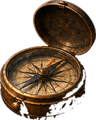

Stanotte c'è da fare
Vai nella stanza e tocca Lavora. Ogni lavoro fatto spinge la nave verso Whitby. Sulla nave li trovi in un riquadro dorato.
Luglio 1897. Da Varna a Whitby, con cinquanta casse di terra nella stiva. Ogni notte manca un uomo.
Whitby è davanti a voi, ma il mare vi spinge sugli scogli.

Vai nella stanza e tocca Lavora. Ogni lavoro fatto spinge la nave verso Whitby. Sulla nave li trovi in un riquadro dorato.
Prima del buio puoi fare due cose.